Roxanna's Week 13 P5js Homework
🍊🍎🍋 Fruit Sorting Game 🍊🍎🍋
Welcome to the Emoji Fruit Farm!
Feel free to pick up any fruit that appears on the screen and sort them into their designated baskets. Happy picking! 🧺🌳
🤔💭💡 Ideation 💡💭🤔
As mentioned in last week's assignment for my original proposed project, I wanted to create an interactive experience that could be utilized in an automotive HUD, but quickly realized I didn't have the adequate amount of time to finish the project for final's week. So instead I went with my back-up plan of creating a pinch and grab game.
👩💻✨🖱️ Process 🖱️✨👩💻
As mentioned in last week's assignment for my original proposed project, I wanted to create an interactive experience that could be utilized in an automotive HUD, but quickly realized I didn't have the adequate amount of time to finish the project for final's week. So instead I went with my back-up plan of creating a pinch and grab game.
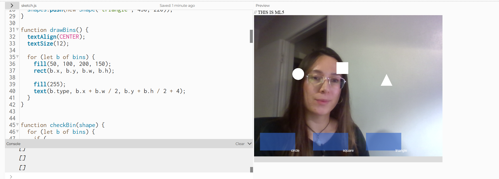
To start things off, I utilized some of the code from the in-class exercises as a starting point for the pinch and grab functions. For the pinch and grab motions, I set the code to recognize the the index finger and thumb. To get a basic understanding of placements and getting everythign to work first, I used simples shapes (a triangle, circle, and square) as placeholders.
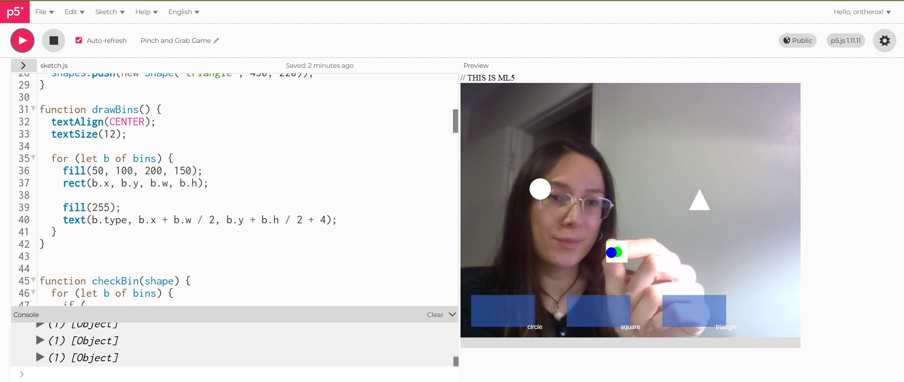
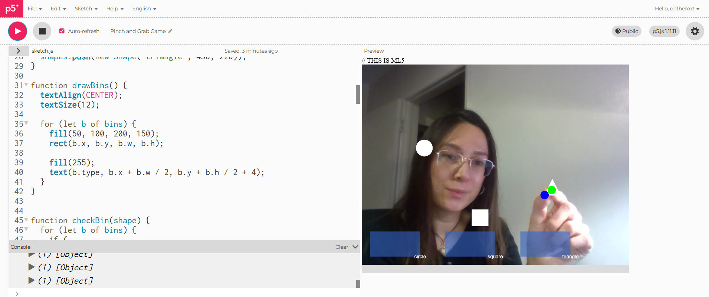
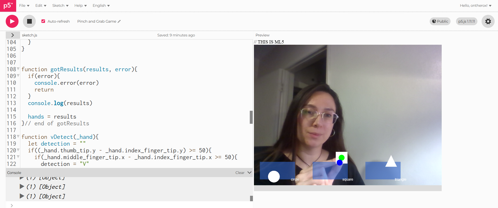
Once I had the basic functions down, I did some brainstorming and landed on creating a fruit sorting game. I first changed the shapes to simple cirlces and assigned colors to represent eaach fruit and its designated basket.
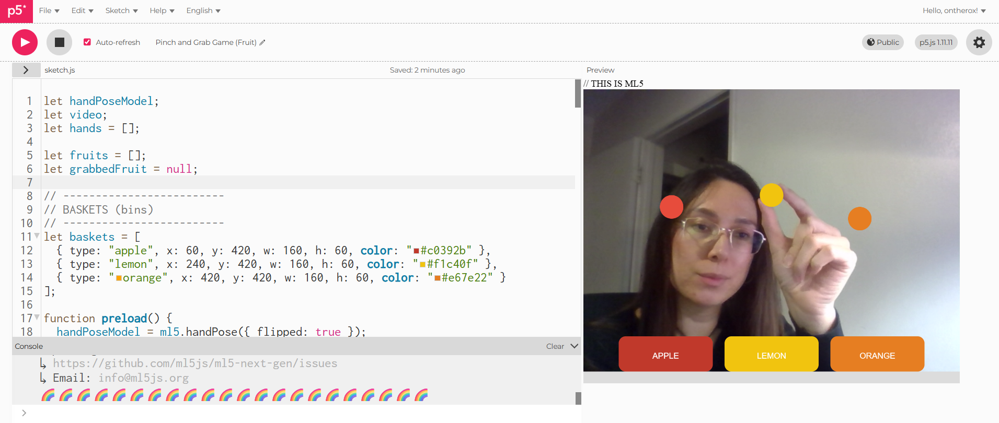
Since I was in a pinch for time, I decided to opt for emojis since it was fairly easy to gather the necessary objects I needed to achieve a fun and cute look for the game. The main four emojis I used were 🍊, 🍎, 🍋 and 🧺. By default the emojis appeared smaller. With my code in place, I made minor incremental adjustments until the baskets were the right size.
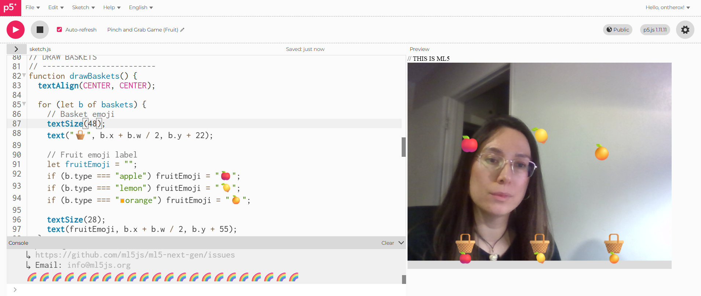
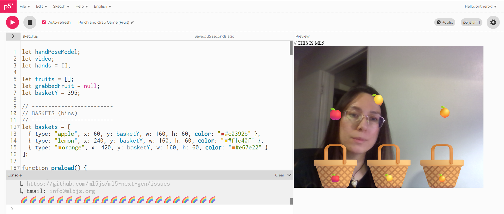
Once I was happy with the size of the baskets, I moved on to adding labels to each basket so it would be easier for the player to easily distinguish which fruit should go into each basket. With minor adjustments I was able to get the labels to a reasonable size and shape.
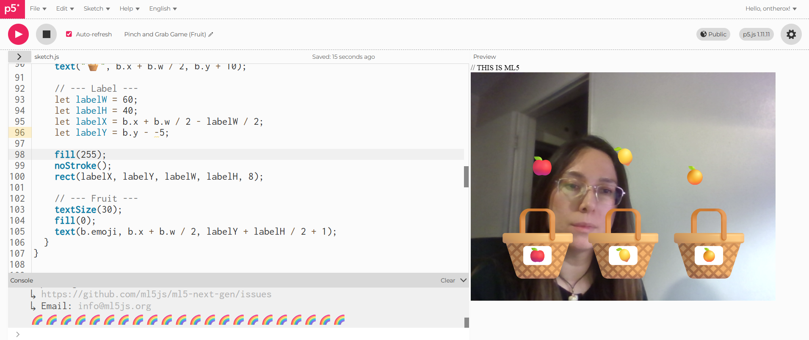
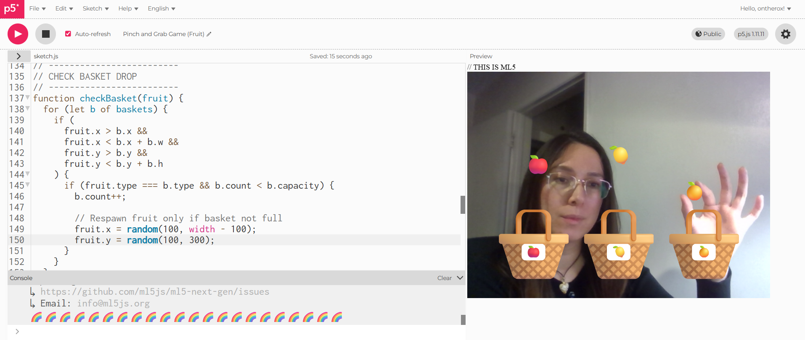
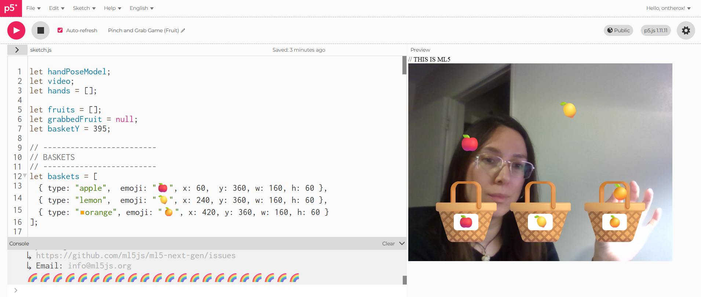
While testing out the pinch and grab functions, I realized how difficult it was to grab each fruit. In an effort to make this easier, I tested out various sizes of the fruit to figure out the ideal size for grabbing.
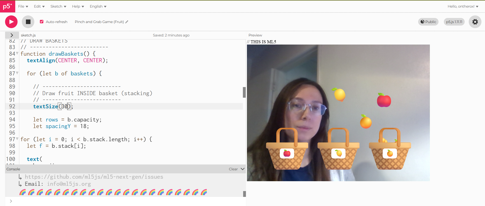
Once I landed on a size for the scattered fruit, I noticed that the fruit inside the basket appeared to be small and stacking in an manner. With various adjustments I was able to increase the size of the fruit to make it have the appearance of it filling up as you add more to the basket.
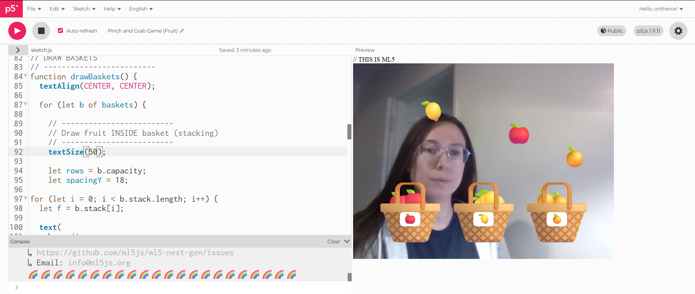
Initially I was really happy with how the game turned out, but to make it feel more complete, I ended up adding both "Start" and "Congratultions" screens to make it feel like a true game.To tie into the theme of fruit, I added randomized fruit that randomly float on the screen whenever the game is regenerated.
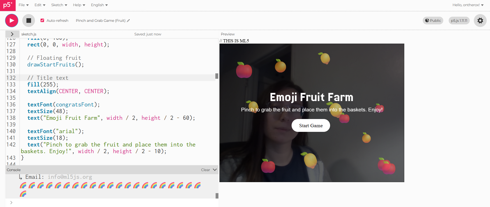
Overall, I really enjoyed making this game! While I wasn't able to work on my initial idea, I think by doing this project it helped me get more familiar and comfortable with building this kind of sketch. With the knowledge I've gained with this project and all of the projects I worked on this semester, I am more confident in my ability to build code. Thank you again for everything you taught us in this class, Maxim! ✨